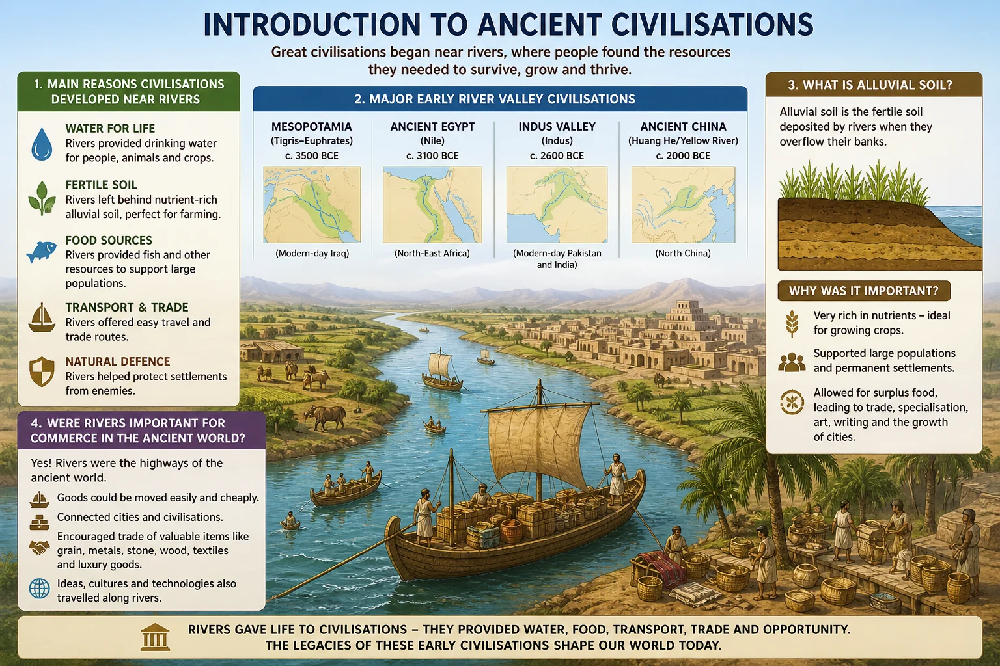
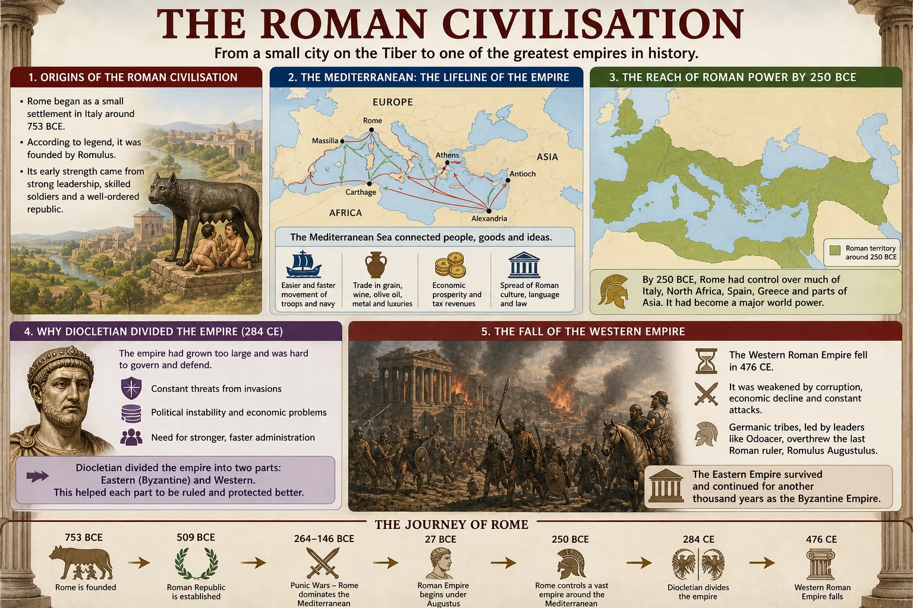
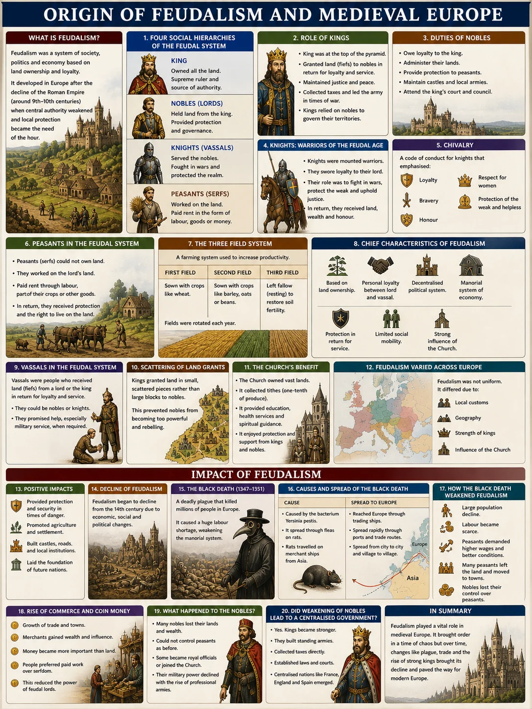
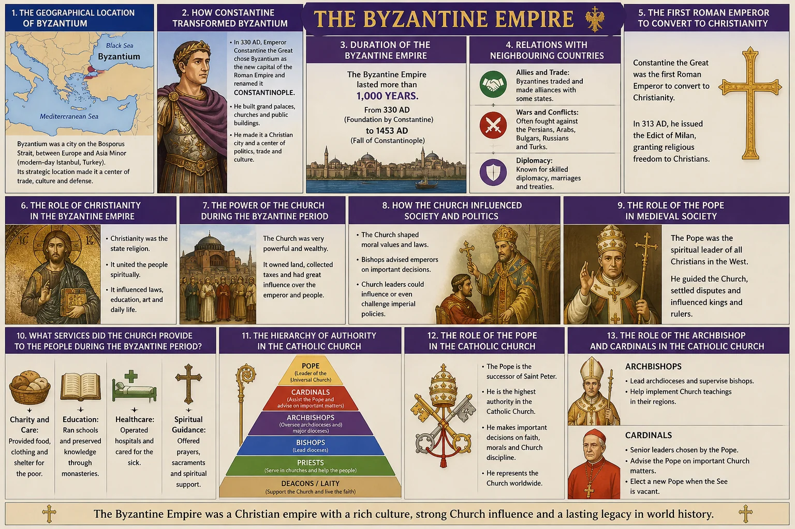
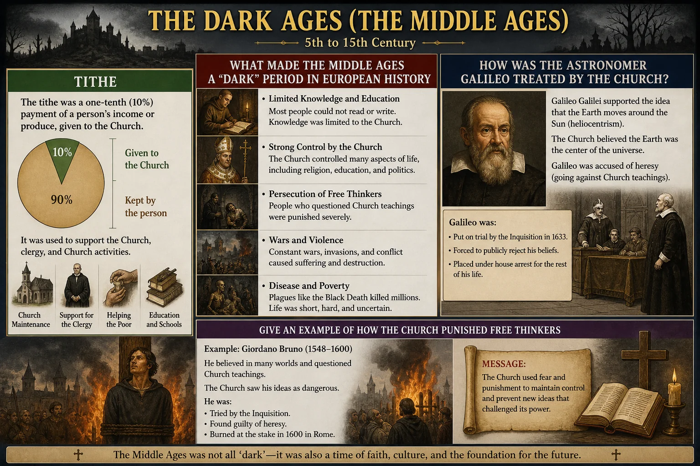
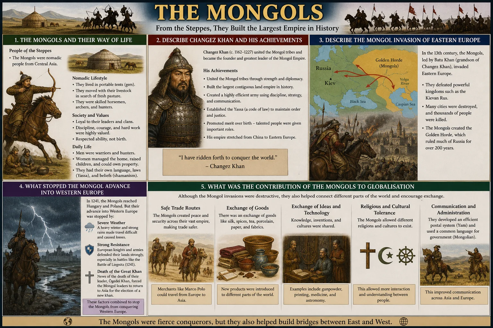
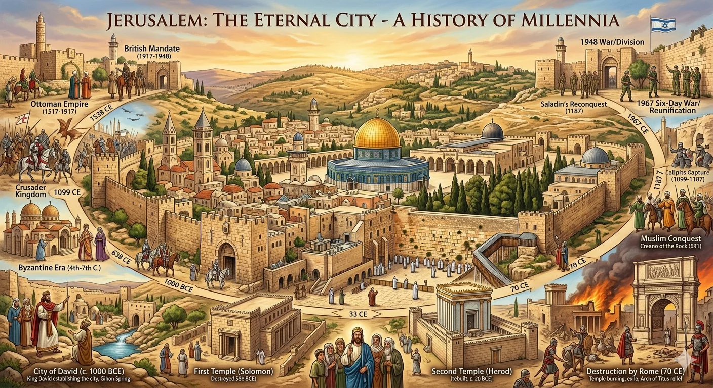
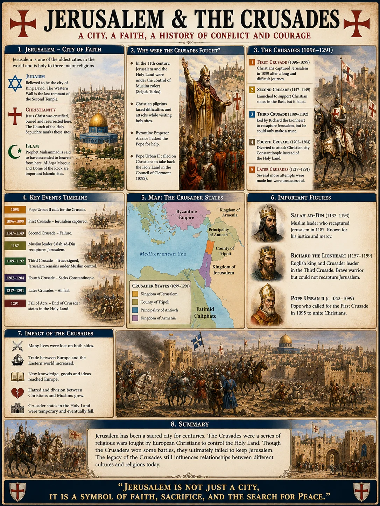

Chapter Overview
Key skills you will develop by the end of Chapter 1: The Middle Ages.
History: The Middle Ages
Complete chapter notes with all diagrams and vocabulary: PDF format
Please note: The content on this page is a concise preview of the chapter. The complete notes, including all detailed explanations, diagrams, worked examples, and exam-style questions, are available in the PDF. We strongly encourage you to download the PDF for the full learning material.
Chapter Diagrams
High-quality illustrated diagrams from W.H. Academy Class 7 History notes.








Ancient Civilisations: Why Rivers Mattered
Why the first great civilisations all began near rivers.
Origins of Civilisation Near Rivers
1. Why did ancient civilisations begin and develop near rivers?
Water and food: Rivers provided a reliable supply of fresh water for drinking and also supported fishing, giving communities a dependable food source even when crops failed.
Agriculture: Rivers regularly flooded their banks and deposited fertile alluvial soil, which was ideal for growing crops. This allowed communities to produce surplus food and support growing populations.
Trade: Rivers served as natural highways for boats, making it far easier and cheaper to transport goods between communities and facilitating the development of trade networks.
2. Name the four major early river valley civilisations.
Mesopotamian Civilisation: developed between the Tigris and Euphrates Rivers (modern-day Iraq), around 3500 BCE.
Ancient Egyptian Civilisation: developed along the Nile River (North-East Africa), around 3100 BCE.
Indus Valley Civilisation: developed along the Indus River (modern-day Pakistan and India), around 2600 BCE.
Chinese Civilisation: developed along the Yellow River or Huang He (North China), around 2000 BCE.
The Roman Civilisation: Rise, Growth and Fall
How Rome became the greatest empire of the ancient world and why it collapsed.
The Rise of Rome
3. How and when did Rome emerge?
Over the following centuries, Rome expanded through military conquest, eventually building one of the largest and most powerful empires the world had ever seen, stretching from Britain in the north to Egypt in the south.
4. Why did Emperor Diocletian divide the Roman Empire?
The Eastern Roman Empire, with its capital at Constantinople, survived for nearly another thousand years. The Western Roman Empire was far less stable and eventually collapsed.
The Fall of the Western Roman Empire
5. What were the main causes of the fall of the Western Roman Empire?
Political corruption: The government became deeply corrupt and constant power struggles between rival emperors weakened central authority.
Division of the Empire: When Constantine moved the capital to Constantinople, it drew resources and attention away from the western half.
Power of the Church: The Church of Rome accumulated so much wealth and authority that it sometimes held more power than the emperors themselves.
Weakening of the army: The Roman army gradually lost its discipline and effectiveness.
Economic collapse: Heavy taxation caused widespread poverty, social unrest and chaos among ordinary citizens.
Provincial rebellions: Distant provinces began to break away and declare independence.
Barbarian invasions: Germanic tribes and the fearsome Huns from Central Asia repeatedly attacked the weakened empire until it finally fell around 476 CE.
6. What were the Dark Ages and why are they called dark?
The period is called dark because of the scarcity of historical records: most knowledge was controlled by the Church and literacy outside the Church was extremely rare. Wide-scale warfare, poverty and disease dominated daily life.
Scientists, artists and thinkers had to hide their work for fear of persecution. Anyone who challenged Church teachings could be imprisoned or executed. The astronomer Galileo, for example, was sentenced to life imprisonment in 1633 CE for stating that the Earth was not the centre of the universe.
Feudalism: Structure, Roles and Decline
How medieval European society was organised around land and loyalty.
What Was Feudalism?
7. What was the feudal system?
Under feudalism, land was the most important form of wealth and power. The king owned all the land and distributed it to loyal supporters in exchange for military service and taxes.
8. What were the four levels of the feudal hierarchy?
Level 1: Kings: At the very top of the hierarchy, answerable only to God and the Church. Kings owned all the land in the kingdom and distributed parcels of it to loyal nobles.
Level 2: Nobles (Tenants-in-Chief): Powerful landowners who received large estates from the king in exchange for providing soldiers and financial support.
Level 3: Knights (Lords): Military men who received smaller parcels of land from nobles. They followed a strict code of conduct called chivalry and were required to fight for their noble when called upon.
Level 4: Peasants: The largest group, at the bottom of the hierarchy. They worked the land and produced all the food but owned almost nothing.
9. What were the two types of peasants?
Bonded peasants (serfs) were tied to the lord's land. They were required to work on the lord's fields for a set number of days each week in exchange for a small plot of land on which to grow their own food. They could not leave the land without the lord's permission.
10. What were the main characteristics of the feudal system?
It was based on a mutual exchange: the king received taxes, military service and loyalty from his vassals, while vassals received land, protection and justice from the king.
Nobles were deliberately given land in different parts of the country rather than in one large block, to prevent them from becoming powerful enough to challenge the king.
All levels of the system were interdependent: none could function without the others.
The Church held a unique position. It was granted large estates but, as an independent institution, it was exempt from paying taxes to the king, which gave it enormous independent wealth and power.
The Decline of Feudalism
11. Why did feudalism decline from the 14th century onwards?
The Black Death: The plague of 1347 to 1352 CE killed more than a quarter of the European population, creating a severe labour shortage. Surviving peasants could now demand better pay and conditions, severely undermining the rigid feudal structure.
Growth of a money economy: As trade expanded, money became more important than land. Lords began paying knights and soldiers in coin rather than granting land, reducing the personal bonds of the feudal system.
Stronger central governments: Kings gradually became powerful enough to govern directly without relying on nobles, making the feudal structure unnecessary.
Urbanisation: Peasants increasingly moved to growing towns where they could earn wages and live as free citizens, breaking the ties that bound them to the land.
12. What was the Black Death and how did it affect feudalism?
It was caused by bacteria and was originally brought to Europe by Mongol invaders. The disease was carried by fleas that lived on black rats and was transmitted to humans when the fleas bit them.
The Black Death had a profound effect on feudalism because the sudden and dramatic loss of population created a severe labour shortage. With far fewer workers available, surviving peasants could demand higher wages and better conditions, which began to erode the power of the feudal lords.
The Church: Power, Hierarchy and the Dark Ages
How the Catholic Church dominated every aspect of medieval life.
The Power and Structure of the Church
13. What was the hierarchy of the Catholic Church in medieval Europe?
At the very top was the Pope, who held supreme authority over the entire Church and exercised enormous influence over political leaders across Europe.
Below the Pope were Cardinals and Archbishops, who governed large regions of the Church.
Bishops managed individual dioceses (church districts).
Abbots led monasteries.
At the base were ordinary Priests who served individual parishes, and Monks and Nuns who lived in religious communities.
14. What powers did the Pope hold over people in medieval times?
Most powerfully, the Pope held the ultimate spiritual threat: he could declare any person, including a king, to be excommunicated. Excommunication meant being publicly expelled from the Christian community, denied access to Church sacraments and, in the beliefs of the time, condemned to Hell.
This gave the Pope power that no purely political leader could match, since it extended to people's eternal souls.
15. What was tithe?
This system gave the Church an enormous and reliable stream of income, accumulating vast wealth in land, buildings and treasure. This financial power, combined with its spiritual authority, made the Church the most powerful institution in medieval Europe.
The Mongols and the Crusades
Two major forces that shaped the medieval world.
The Mongols: Nomads Who Changed the World
16. Who were the Mongols and what was their way of life?
The Mongols were renowned as skilled horse riders and fierce warriors. Their mobility and military discipline made them extraordinarily effective in battle against the settled civilisations of Asia and Europe.
17. Who was Changez Khan and what did he achieve?
Under his command, the Mongols launched military campaigns of extraordinary scale, conquering territories from China in the east to Persia and Eastern Europe in the west, creating the largest contiguous land empire in history.
Despite the destruction his campaigns caused, Changez Khan is also credited with facilitating remarkable connections between distant civilisations, contributing more to globalisation: the linking of East and West through trade, culture and ideas: than almost any other leader before him.
The Crusades: Wars Over the Holy Land
18. What were the Crusades?
The word Crusades is derived from the term War of the Cross, reflecting the religious motivation of the Christian armies who wore crosses on their armour. The Crusades took place between 1095 CE and 1270 CE and involved multiple separate military expeditions.
A secondary aim was to halt the expansion of Muslim states into Christian Europe.
19. Who was the first Muslim ruler to conquer Jerusalem?
Under Muslim rule, which lasted for approximately 450 years, Jerusalem was maintained as a city of religious harmony. Christians, Jews and Muslims were all permitted to visit and worship at their respective holy sites without interference. This period of relative tolerance stood in contrast to the violent conflicts that followed during the Crusades.
Chapter 1 Vocabulary
Important terms from The Middle Ages: learn these definitions for exam questions.
| Term | Definition |
|---|---|
| Civilisation | An advanced human society with its own culture, government, laws and specialised occupations |
| Alluvial soil | Fertile soil deposited by rivers, ideal for farming: the reason early civilisations developed near rivers |
| Dark Ages | The period from approximately 476 to 800 CE marked by widespread warfare, Church dominance and a halt to scientific progress |
| Feudalism | A political, economic and social system in medieval Europe based on the distribution of land in exchange for loyalty and service |
| Hierarchy | A system in which people or groups are ranked one above another according to status or authority |
| Vassal | A person who received land from a king or noble in exchange for loyalty, taxes and military service |
| Chivalry | The strict code of honour and conduct that knights were required to follow to maintain their status |
| Peasant | A person at the bottom of the feudal hierarchy who worked the land in exchange for protection and a small plot to cultivate |
| Serf | A bonded peasant who was legally tied to the lord's land and could not leave without permission |
| Black Death | A devastating plague (1347 to 1352 CE) that killed approximately one quarter of Europe's population |
| Tithe | A compulsory payment of one-tenth of a person's income to the Church in medieval times |
| Pope | The supreme leader of the Roman Catholic Church, who held enormous spiritual and political power in medieval Europe |
| Excommunication | Being formally expelled from the Christian community by the Pope: considered a sentence to Hell in medieval belief |
| Crusades | A series of religious wars (1095 to 1270 CE) fought by European Christians to retake Jerusalem from Muslim rule |
| Mongols | Nomadic tribal people from Mongolia who, under Changez Khan, built the largest contiguous land empire in history |
| Globalisation | The process by which different parts of the world become connected through trade, communication and cultural exchange |
| Barbarians | In ancient Roman usage, people considered uncivilised who lived outside the Roman Empire |
Test Yourself: Chapter 1 Quiz
Chapter-wise MCQs aligned with APSACS and FBISE. No login. Instant results.
Start Quiz NowWant Live Explanation of The Middle Ages?
Join W.H. Academy: Live tutoring, recorded lectures and full chapter solutions for APSACS and FBISE students in Rawalpindi and online across Pakistan.